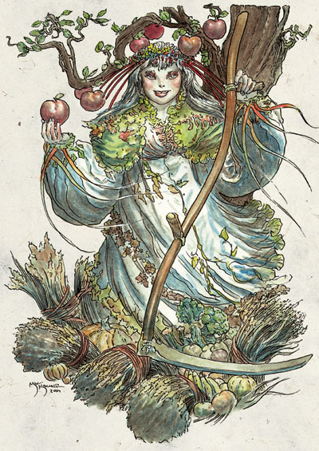
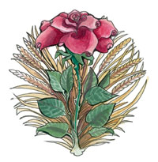

裳禔亚 Chauntea（大地母神）

费伦神系 强大神力
别称：伟大母亲 The Great Mother，谷物女神 the Grain Goddess，大地之母 Earthmother
圣徽：以一圈金黄麦浪为背景的盛开玫瑰

居住界域：自然之殿 House of Nature
阵营：中立善良 NG
神职：农业 Agriculture，人类种植的作物 plants cultivated by humans，农夫 farmers，园丁 gardeners，夏天 summer
信徒：以农为业者，德鲁依，农夫，园丁
牧师阵营：守序善良 LG，中立善良 NG，混乱善良 CG，绝对中立 N
神域：动物 Animal，土 Earth，善良 Good，植物 Plant，保护 Protection，复苏 Renewal
喜好武器：麦浪 A shock of grain（巨型镰刀 scythe）
裳禔亚女神与扥瑞尔世界（Toril）自身一样古老，她是赐给自然界使之有生命的神性火花，也是在世界初创时被注入的那一充满关爱的明亮灵性存在。虽然原本 是掌管荒野地带与动物的神祇，但裳禔亚与她的世界一同成长，接纳且适应它的众多改变。她在无数的岁月中养成了极沉稳的耐心－毕竟她从世界还非常沉寂时就已 经存在了。裳禔亚喜爱她世界中的居民，也终于建设整个世界，让它更加富足。在她的教导之下，原本四处漫游的凡人们放弃了缺乏安定的采集生活，改为稳定的农 耕生活。时至今日，人们尊她为农业的伟大母亲，慈爱地让凡人们农作丰收、衣食无缺、生活健全。
裳禔亚极少以人类形象出现，她较偏好让自己的本质在扥瑞尔世界上一切充满生气的土地上自处流动。在宗教的典籍中她的人类形象常被描述成一位头发雪白，脸上挂着慈爱微笑的中年妇人，手持一把坚实的大型收割镰刀，以作为帮助行走的手杖或武器（当她偶尔必须战斗时）。
裳 禔亚受到许多农人、园丁、农奴等依靠农耕维生只人的崇敬，大部分的费伦住民也视她为生命自然周期中不可或缺的一环。不论是富有的地主或简朴的农人都同样会 为当地的牧师服务，以祈求当年（或来年）的丰收。当恶劣的天候或疾病肆虐时，农人们也会向裳禔亚祈祷，请她救助田地中当季的作物。大地之母的神职人员也扮 演着牧人的角色，严防恶徒破坏农作。
信奉裳禔亚的牧师与德鲁依在日落时祈祷以获得神术。教会内部的固定圣日不多－相对地，牧师鼓励信众们 在每天的日出、或者每当身受大自然的美丽感动时满怀喜乐地祈祷感谢女神。此外，教会中有一项历史悠久的传统－每对新婚的夫妻都必须在新犁过的田地中度过两 人的初夜－据说这样可让该对夫妻子嗣繁衍众多。「丰饶」（Fertility）在裳禔亚的信仰中占有非常重要的地位，每年在「绿草节」 （Greengrass）期间举办的欢乐庆典中也充斥着大吃大喝与狂歌热舞等暂时摆脱拘束的行为。牧师们在每年开始耕作时也会举行庄严肃穆的「至高丰收祈 祷」（High Prayers of the Harvest）仪式。裳禔亚的牧师通常兼职游侠或德鲁依。
历史/与众神的关系 History/Relationship：
裳 禔亚视费伦大陆上最古老的众神之一。当苏伦（Selune）与莎儿（Shar）共同创造了扥瑞尔世界之后，两位女神共同赐给她生命。在之后无数的岁月中， 裳禔亚与许多神祇有过亲密的关系－许多在今日都已不复存在。她也在历史中与许多意图染指其世界的神祇争斗（甚至毁灭对手）。有些信徒宣称裳禔亚是所有生命 的源头，在那段空气与大地依旧沉寂的时间里，如今在世上开枝散叶的众多种族皆是在其子宫内孕育而生。在早期的历史中，裳禔亚的另一个名字是「大地之母占娜 丝」（Jannath the Earthmother），是一位喜好与动物们共同奔驰、为大自然未受阻挠欣欣向荣而欣乐的野性神祇。虽然月影岛（Moonshade Isles）的居民至今仍敬拜伟大母亲的这个古老面向，但这位女神却已随着世界一起改变。
在最近几个世纪中，裳禔亚变得更加喜爱其世界中 的住民（特别是人类），因此比从前付出更多心力帮助子民们的农耕活动。虽然她现在依然提倡尊敬大自然，并鼓励开化地区的居民回复他们对自然所造成的损伤， 但许久之前她便已将荒野地区的管辖权让渡给其它神祇。裳禔亚的改变让她与西凡那斯（Silvanus，自然之神）之间的关系更趋冷淡－某些后者较好战的德 鲁依信徒甚至认为伟大母亲已背叛了原本的真我，将整个大自然出卖给急速膨胀步步进逼的开化文明。不过她与其它自然神祇－特别是希昂莉亚 （Shiallia，新芽女神）、梅莉凯（Mielikki，森林与游侠女神）、菈芮（Lurue，独角兽女神）、以及埃达丝（Eldath，水泉与宁和 女神）之间的关系仍然十分密切。她十分喜爱洛山达（Lathander，晨曦之神）─有时两位神祇之间的关系甚至会更加亲昵－因此他们目前耗费许多时间聚 在一起。裳禔亚反对欧吕尔（Auril，寒冬与冰霜女神）、马拉（Malar，血腥猎杀之神）、塔烙斯（Talos，风暴与毁灭之神）、以及安博里 （Umberlee，海洋女神），她也将班恩（Bane，暴政与斗争之神）的回归视为黑暗再临的预兆。塔洛娜（Talona），剧毒女士，是伟大母亲最痛 恨的仇敌，她那在自然界中散布枯萎、剧毒、疾病的爱好在在都使大地之母愤怒不已。
教义 Dogma：
成长与收割都是永恒 周期的一环，也是生命中最自然的一部份。毫无意义的破坏与砍伐之后不加重建都是错误的可鄙行为。每天都至少要帮助一个生命，使其繁荣兴旺。不论身处何方都 要进可能地栽培、照料植物及播下种子。保护所有的树木与植物，并保存它们的种子，如此一来当它们不幸被毁时便可使其重生。应当照料大地，保持其肥沃丰饶， 之后就让人类照料自己的作物。应尽量避免使用火焰。至少每隔十天就栽下一颗种子或新生植物。
牧师与神殿 Clergy & Temples：
伟 大母亲的神职人员们分成两个势力均等的教派－那些专门照料城市、城镇、以及村落中农人及其它倚农维生者的神职人员自称为「牧者」（Pastorals）； 另一个较古老的教派则专注于守护自然荒野，骄傲地自称为「真形者」（True Shaper）。这两个教派彼此之间没有统一的阶级制度－两者壁垒分明互不相通。虽然裳禔亚女神设立了基本的教义，并指出其喜好与禁忌，但每一位牧师与其 追随信众要如何遵守教典却仍有颇大的自由空间。教会欢迎所有种族加入，不过女性信徒的数量远超过男性－或许这是因为教会的礼拜仪式充满了有关丰饶、母性、 以及女性的象征。
信奉裳禔亚的牧师与德鲁依成员通常也是农人或园丁，「牧者」教派的成员更是时常在农业社群中广受众人尊敬。「牧者」的成 员通常都是在小村落或乡野之间诞生（也有一些城市人），他们大多数都是受到自然之美的感召（比如当站在仲夏烈阳照耀下的新耕农田之中时，感受到平和宁静的 喜悦）而加入教会。由于他们能够提升地力并驱走各种自然或人为的枯害，因而赢得同辈（其它普通农人）的敬重与赞扬。他们也乐于在农忙时节脱去上衣加入众人 忙碌的行列，维持农耕人民的安全健康并提供自己的力量（即使是艰辛低贱的工作也毫不排斥）。与他们信奉的神祇相同，大多数裳禔亚的牧师都非常寡言且深具耐 心、性格沉稳不易发怒，且偏好和平的交涉（而不是公开的冲突）。
令人倍感惊讶的是，有一些城市为伟大母亲建造神殿－通常都是巨大且有许多 窗户的建筑物，也拥有谷仓或使人印象深刻的花园。而在其它地方（城市之外的地区），大多数的仪式都是露天在日光或月光之下举行，而且，牧师们都是在自己的 住处、小型圣坛、甚至是马厩或秣草堆旁进行其特殊的礼拜仪式。牧师与德鲁依们在这些地方教导其它人如何正确栽种植物的方法、辨认动植物疾病的特征、以及草 药的使用方法。许多成员都已婚，且担任助产士为其它人与动物接生。他们也大力提倡尊重大自然，并强调移植、细心灌溉、以及轮种不同作物以确保地力的重要 性。
然而，信奉西凡那斯的好战德鲁依们却对这些努力抱持蔑视的态度，宣称这些农耕的教导才是对大自然的真正侮辱－因为这会让更多人聚集在 可提供稳定食物来源的地区，从而加速人口成长与破坏自然的速率－这恰恰与「牧者」教派的良善立意背道而驰。西凡那斯的信徒们声称，裳禔亚牧师所传播的农耕 教导使得河川被迫改道、湿地被大量开发，而城市也越来越多－长此以往，假以时日之后一定会对自然界的平衡造成永难回复的伤害。虽然「牧者」教派完全不相信 上述说法，但这些保守的言论已在「真形者」教派（其成员大多数都是德鲁依）内引起极大的混乱，因此自上个世纪以来已有许多裳禔亚信徒转而信奉西凡那斯，使 这两个信仰之间的关系愈趋冷淡。
裳禔亚的化身 Chauntea’s Avatar：
裳禔亚的化身形象大都是一位仁慈的 白发中年妇人，她那有些粗糙结实的美丽外表看起来就像是长期在阳光下生活一样。她身着一件庄严神圣的白色丝袍，并在腰间系着一条绣上各种自然图案的腰带。 当裳禔亚偶尔派遣化身去侦查观测时，则会改用精类生物或动物的形象。她的化身会教导信徒们如何提升土地的肥沃度、与那些胆敢掠夺她信徒土地的邪恶作战、或 者重新回复荒芜土地的生命力。比起费伦大陆的其它地区，她的化身较常在月影岛地区出现。
--
资料来源：费伦大陆信仰与神系《Faiths & Pantheons》
译者：一凡